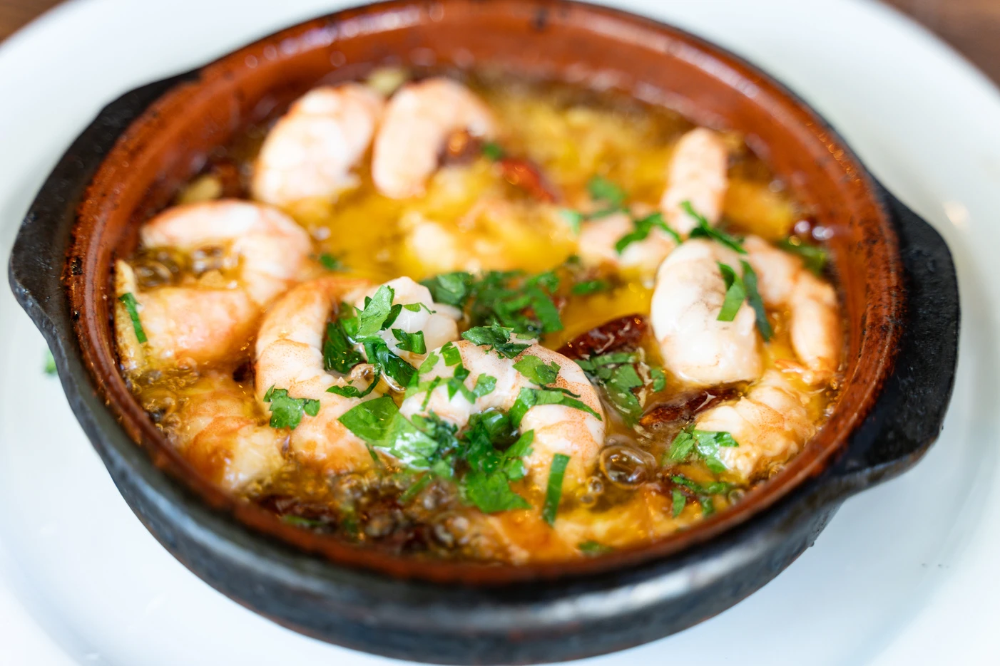
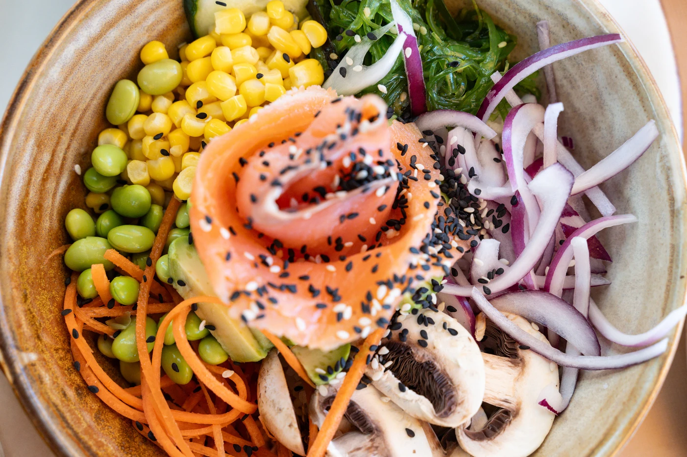

01
Entrantes
Servicio de pan y aperitivo: 1,50 € por persona.
Nachos de la Casa
15.00 €Lagrimitas Crispy
15.00 €Pimiento al Padrón con papa y huevo frito
12.00 €Sticks de Queso
13.00 €Pulpo a la Gallega
21.00 €Croquetas de la casa
3.50 €Piruletas de Langostinos
15.00 €Huevos rotos con setas salvajes y chistorra
14.00 €Morcilla de Arroz D. O. Burgos
12.00 €Tartar de Salmón
20.00 €Patatas bravas Almarina
12.00 €Sopa o Crema
12.00 €Parrillada de verduras
18.00 €Langostinos al Pil-Pil
16.00 €Tabla de Ibéricos
30.00 €Tabla de Quesos
20.00 €Vieiras gratinadas x 2u
16.00 €
02
Ensaladas
Servicio de pan y aperitivo: 1,50 € por persona.
Ensalada Almarina
17.00 €Ensalada queso de cabra
17.00 €Ensalada cesar con pollo
16.00 €Ensalada de Burrata
18.00 €Ensalada Mixta
16.00 €Poke bowl de Salmón
15.00 €